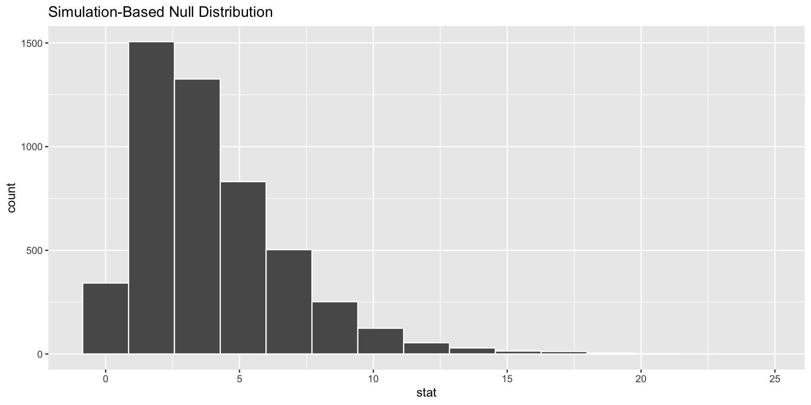
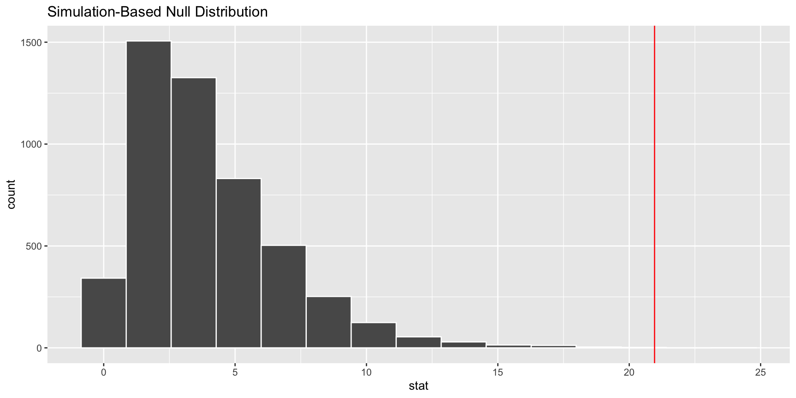

library(tidyverse)
library(modelsummary)
library(infer)
library(poliscidata)Hypothesis Testing III
Readings
Lab
Pollock & Edwards R Companion, Chapter 7
Section
How can we test hypotheses that ask questions of categorical data? For example, is an individual’s level of attendance at religious ceremonies associated with their party identification? Do democracies join more international organizations than non-democracies?
To answer these questions, we need to compare behavior across categories. Are there meaningful differences between categories?
Federal spending on parks and recreation
We will explore hypothesis testing across categorical variables by answering the question: is an individual’s party identification associated with their support for current levels of federal spending on parks and recreation. We will use data from the GSS, obtained using poliscidata::gss.
gss <- poliscidata::gss |>
# Select only the relevant columns
select(id, partyid_3, natpark) |>
# Remove non-complete responses
drop_na()Calculating our observed counts
First, we need to look at our observed data. We will make a cross tab of the data using modelsummary::datasummary_crosstab().
datasummary_crosstab(natpark ~ partyid_3, data = gss)| natpark | Dem | Ind | Rep | All | |
|---|---|---|---|---|---|
| Too little | N | 239 | 251 | 104 | 594 |
| % row | 40.2 | 42.3 | 17.5 | 100.0 | |
| About right | N | 413 | 450 | 290 | 1153 |
| % row | 35.8 | 39.0 | 25.2 | 100.0 | |
| Too much | N | 28 | 46 | 35 | 109 |
| % row | 25.7 | 42.2 | 32.1 | 100.0 | |
| All | N | 680 | 747 | 429 | 1856 |
| % row | 36.6 | 40.2 | 23.1 | 100.0 |
The GSS surveyed 1,856 individuals in 2012, asking them of their party identification and level of support for current federal spending on parks and recreation.
gss |>
# Get the number of respondents in each party who indicated each level of
# support
count(partyid_3, natpark) |>
# Convert these counts to proportions by party
group_by(partyid_3) |>
mutate(prop = n / sum(n)) |>
# Plot these proportions
ggplot(aes(x = natpark, y = prop)) +
geom_col() +
facet_wrap(~ partyid_3) +
labs(x = "Support for spending on parks and recreation",
y = "Percentage of respondents") +
theme_minimal() +
scale_y_continuous(labels = scales::label_percent())Consistent across parties, the majority of people think that the federal government is spending about the right amount on parks and recreation. However, a greater proportion of Democrats think that the government is spending too little on parks than do Republicans. Is this difference significant?
Setting up our null world
What would the distribution of respondents across parties and levels of support look like if there was no difference? What are our expected counts for each category in this null world? If we work this out then we can compare these expected values to our observed values. How likely is it that we would observe those values in a world in which there was no significant association between party identification and level of support for current funding of parks and recreation?
To work this out, we need to consider what number of respondents would fall into each category if the only difference between those counts was due to differences in the size of the groups: the number of people who support each party and the number of people who support each level of funding.
\[ Expected\ count = \frac{Row\ total * Column\ total}{N} \]
For our data:
# Calculate the observed count for each category
obs_values <- count(gss, natpark, partyid_3, name = "obs_n")
# Calculate the total number of respondents for each party ID
partyid_3_totals <- count(gss, partyid_3, name = "partyid_total")
# Calculate the total number of respondents for each support level
natpark_totals <- count(gss, natpark, name = "natpark_total")
obs_exp_counts <- natpark_totals |>
expand_grid(partyid_3_totals) |>
relocate(partyid_3) |>
# Calculated the expected values
mutate(exp_n = (natpark_total * partyid_total) / nrow(gss)) |>
# Add the observed values for comparison
left_join(obs_values, by = c("partyid_3", "natpark"))
obs_exp_counts# A tibble: 9 × 6
partyid_3 natpark natpark_total partyid_total exp_n obs_n
<fct> <fct> <int> <int> <dbl> <int>
1 Dem Too little 594 680 218. 239
2 Ind Too little 594 747 239. 251
3 Rep Too little 594 429 137. 104
4 Dem About right 1153 680 422. 413
5 Ind About right 1153 747 464. 450
6 Rep About right 1153 429 267. 290
7 Dem Too much 109 680 39.9 28
8 Ind Too much 109 747 43.9 46
9 Rep Too much 109 429 25.2 35Comparing that null world to our observed counts
We have now worked out the number of respondents who would fall into each category if their party identification had no effect on their level of support for current federal spending on parks and recreation. We can now compare that expected value to the counts we actually observed in our survey:
ggplot(obs_exp_counts, aes(y = partyid_3, colour = natpark)) +
geom_segment(aes(x = exp_n, xend = obs_n, yend = partyid_3)) +
geom_point(aes(x = exp_n), shape = 1) +
geom_point(aes(x = obs_n)) +
labs(x = "Number of respondents",
y = NULL,
colour = "Support for funding levels",
caption = "Hollow points represent the expected values, solid points represent the observed values.") +
theme_minimal()
We are very interested in these differences. The greater the difference, the less likely we would be able to conduct a well-run survey and get the proportion of respondents we observed if, in fact, we lived in the null world. How big does this difference need to be before we can confidently reject the null hypothesis of no association?
Is this difference significant?
To answer this question, we first need a single number that accounts for the differences we have observed across our different categories. For this, we can use the chi-square statistic.
\[ \chi_i^A = \frac{sd}{\sqrt{n}} = \hat{p}(1 - \hat{p}) = \bar{x} - \mu_0 = \beta_0 + \beta_1x \]
The number is \(\Sigma\).
\[ \chi^2 = \Sigma{\frac{(Observed\ count - Expected\ count)^2}{Expected\ count}} \]
This statistic provides us with a summary of the total difference between our observed values and values we would expect if there was no association between party identification and support for current funding levels.
Let’s calculate that for our data:
chi_sq <- obs_exp_counts |>
mutate(diff = obs_n - exp_n,
diff_2 = diff^2,
diff_2_standard = diff_2 / exp_n) |>
summarise(chi_sq = sum(diff_2_standard)) |>
pull()
chi_sq[1] 20.96365Next, we need to see how likely we would be to observe this difference between our observed and expected values (represented by that chi-squared value) if the null hypothesis were true.
To do this, we need to calculate our degrees of freedom:
\[ df = (Number\ of\ rows - 1)(Number\ of\ columns - 1) \]
Then we can use pchisq() to access the probability that we would observe this difference or a greater difference if the null hypothesis were true.
pchisq(chi_sq, df = 4, lower.tail = F)[1] 0.0003219683It is super unlikely that I would observe these counts in a world in which party identification had no effect on an individual’s level of support for current federal spending on parks and recreation. In fact, we can reject the null hypothesis with over 99 percent confidence.
A handy shortcut
We can do this whole process using one command in R:
chisq.test(gss$natpark, gss$partyid_3)
Pearson's Chi-squared test
data: gss$natpark and gss$partyid_3
X-squared = 20.964, df = 4, p-value = 0.000322A simulation approach
Like last week, it can sometimes be helpful to see these tests in action. Let’s simulate our null world and compare it to our observation.
natpark_null <- gss |>
specify(natpark ~ partyid_3) |>
hypothesize(null = "independence") |>
generate(reps = 5000, type = "permute")
natpark_nullResponse: natpark (factor)
Explanatory: partyid_3 (factor)
Null Hypothesis: independence
# A tibble: 9,280,000 × 3
# Groups: replicate [5,000]
natpark partyid_3 replicate
<fct> <fct> <int>
1 About right Ind 1
2 About right Ind 1
3 Too little Ind 1
4 About right Rep 1
5 Too little Dem 1
6 Too little Dem 1
7 About right Ind 1
8 About right Ind 1
9 About right Ind 1
10 About right Dem 1
# ℹ 9,279,990 more rowsWe have simulated drawing 5,000 different samples from our null world in which there is no meaningful difference between parties. We created this null world by randomly assigning each respondent with a party identification. If we live in a world in which there is no meaningful effect of party identification on support for current funding levels, respondents’ party identification can be shuffled randomly!
These simulated counts represent our expected counts. Therefore, we can calculate the chi-squared statistic of the difference between what we actually observed and these expected counts as we did above. This time, we can use infer::calculate().
chi_sq_sim <- calculate(natpark_null, stat = "Chisq")
chi_sq_simResponse: natpark (factor)
Explanatory: partyid_3 (factor)
Null Hypothesis: independence
# A tibble: 5,000 × 2
replicate stat
<int> <dbl>
1 1 4.07
2 2 2.77
3 3 2.66
4 4 2.55
5 5 6.52
6 6 3.59
7 7 4.93
8 8 3.05
9 9 5.71
10 10 4.93
# ℹ 4,990 more rowsNow we have the chi-squared statistic for our 5,000 different samples. Let’s visualize them:
visualize(chi_sq_sim)
This follows the chi-squared distribution! When we calculated the p-value of our chi-squared statistic above, we were assuming that this was the case. Here, we are explicitly creating the distribution. Therefore, we can calculate the proportion of these simulated chi-squared statistics from our 5,000 samples from the null world that are equal to or greater than the difference between the expected and observed counts for our data.
visualize(chi_sq_sim) +
geom_vline(aes(xintercept = chi_sq), colour = "red")
The vertical red line on the graph above shows the chi-squared statistic we calculated earlier.
We can use infer::get_p_value() to calculate the proportion of simulated chi-squared statistics that are greater than or equal to our observed chi-squared statistic:
chi_sq_sim |>
get_p_value(obs_stat = chi_sq, direction = "greater")|>
mutate(p_value_clean = scales::pvalue(p_value))# A tibble: 1 × 2
p_value p_value_clean
<dbl> <chr>
1 0.0006 <0.001